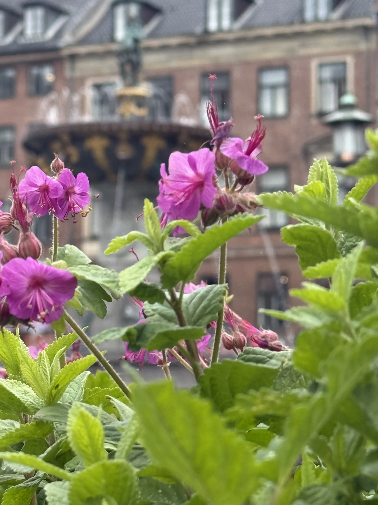

Naturfotografi handler om at indfange stemninger gennem lys, farver og komposition i landskaber og planter.
Jeg har valgt naturbilleder, fordi de skaber ro og giver plads til at arbejde med bløde overgange og naturlige farvetoner.
Især morgen- og aftenslys giver dybde og en mere harmonisk stemning i billederne.





Tips og tricks
- Brug det bløde lys – Fotografer tidligt om morgenen eller sent på dagen.
- Tænk i lag – Forgrund, mellemgrund og baggrund giver dimension.
- Hold horisonten ren – En skæv horisont ødelægger roen.
- Brug stativ ved lavt lys – Sikrer skarphed.
- Mindre er mere – Enkel komposition understøtter stemningen.